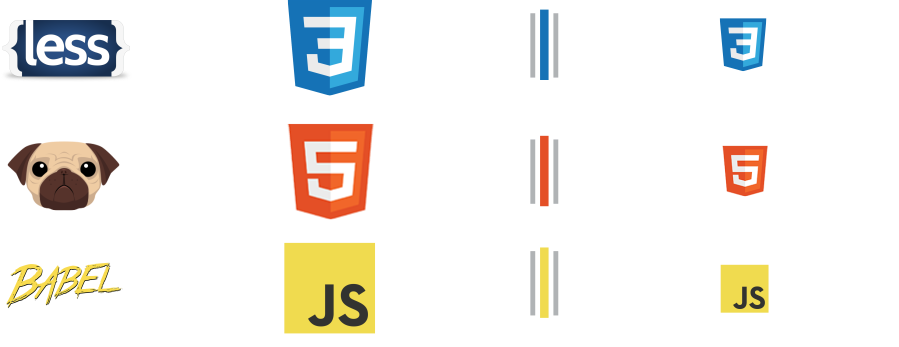

<!DOCTYPE html>
<html lang="es"></html>
<head>
  <!-- Metadatos-->
  <title>Front-end: El lado oscuro</title>
  <meta charset="utf-8">
  <meta name="viewport" content="width=1024">
  <meta name="description" content="Front-end: En los últimos años el mundo del front-end ha avanzado y se ha complicado muchísimo, ¿cómo vencer ese lado oscuro?">
  <meta name="author" content="Manz">
  <!-- Relaciones-->
  <!--link(rel="stylesheet", href="http://fonts.googleapis.com/css?family=Open+Sans:regular,semibold,italic,italicsemibold|PT+Sans:400,700,400italic,700italic|PT+Serif:400,700,400italic,700italic")-->
  <link rel="stylesheet" href="css/impress.base.min.css">
  <link rel="stylesheet" href="css/darkgrey.theme.min.css">
  <link rel="stylesheet" href="https://cdnjs.cloudflare.com/ajax/libs/prism/1.5.1/themes/prism.min.css">
  <link rel="stylesheet" href="https://cdnjs.cloudflare.com/ajax/libs/prism/1.5.1/themes/prism-okaidia.min.css">
  <link rel="icon" href="favicon.png">
</head>
<body>
  <!-- Fallback (navegadores no compatibles)-->
  <div class="fallback-message">
    <p>Tu navegador <b>no soporta HTML5</b>. Para una buena experiencia, por favor, utiliza un navegador moderno compatible con HTML5.</p>
  </div>
  <!-- Comenzamos impress.js-->
  <div id="impress">
    <div id="start" data-x="0" data-y="0" class="step darth">
      <h1>Front-end</h1>
      <h4>El lado oscuro</h4>
      <div style="margin-top:2.5em">
        <p class="medium">Por <span class="red">@Manz</span></p>
        <p style="line-height:10%" class="medium"><a href="http://twitter.com/Manz">twitter.com/Manz</a></p>
      </div>
    </div>
    <div id="farago" data-x="1000" data-y="0" class="step center">
      <p>Hace mucho, mucho tiempo... en un Internet muy lejano...</p>
    </div>
    <div id="backandfront" data-x="1000" data-y="1000" data-z="-1000" class="step center">
      <div class="hidden">
        <p><span class="red">Back-end</span> y <span class="green">Front-end</span> eran un sólo ente.<br> Sin embargo, siempre se percibía de la misma forma...</p>
      </div>
    </div>
    <div id="seafrontend" data-x="2000" data-y="0" class="step"></div>
    <div id="seabackend" data-x="2000" data-y="425" class="step"></div>
    <div id="front-html" data-x="2000" data-y="1800" class="step">
      <p>La tecnología principal del front-end es <strong class="orange">HTML5</strong>.</p>
    </div>
    <div id="html4" data-x="3000" data-y="0" class="step">
      <div class="hidden">
        <p>En los 90 quedaron etiquetas como <code>&lt;marquee&gt;</code> ó <code>&lt;blink&gt;</code></p>
        <p class="small grey">(con las que hoy en día <a href="https://encrypted.google.com/search?q=blink+tag">Google</a> aún bromea)</p>
      </div>
    </div>
    <div id="xhtml" data-x="3500" data-y="0" class="step">
      <div class="hidden">
        <p>Más tarde, llega <code>XHTML</code>.</p>
        <p class="small grey">(Más fácil para máquinas, pero más difícil para humanos)</p>
      </div>
    </div>
    <div id="html5" data-x="4000" data-y="0" class="step">
      <div class="hidden">
        <p>Finalmente se impone <strong class="orange">HTML5</strong>.</p>
        <p class="small grey">(Se añaden capacidades multimedia, web semántica, etc...)</p>
      </div>
    </div>
    <div id="html5-mmedia" data-x="5000" data-y="500" class="step">
      <p>Por ejemplo, es muy sencillo crear componentes multimedia...</p>
      <p class="small grey">(usando directamente video/audio)</p>
      <video controls src="img/dog.mp4" onClick="this.play()" class="photo"></video>
      <div>
        <h6>GIF/<span class="red">32MB</span> MP4/<span class="green">3MB</span></h6>
      </div>
    </div>
    <div id="with-flash" data-x="5000" data-y="500" data-rotate-x="-90" class="step">
      <div class="hidden">
        <p class="medium">...y que antes sólo eran posibles con <span class="red">Flash</span></p>
      </div>
    </div>
    <div id="html5-semantic" data-x="5000" data-y="2000" class="step">
      <p>Usar etiquetas semánticas para mejorar significado:</p>
      <pre class="hidden"><code class="language-html">&lt;div id="cabecera"&gt;&lt;/div&gt;
&lt;div id="contenido"&gt;&lt;/div&gt;
&lt;div id="piepagina"&gt;&lt;/div&gt;</code></pre>
      <div class="hidden">
        <p class="small grey">Problemas: div no semático, clases subjetivas (idioma, poco descriptiva, etc...)</p>
      </div>
    </div>
    <div id="html5-semantic2" data-x="5000" data-y="2050" class="step">
      <pre class="hidden"><code class="language-html">&lt;header&gt;&lt;/header&gt;
&lt;div id="contenido"&gt;&lt;/div&gt;
&lt;footer&gt;&lt;/footer&gt;</code></pre>
      <p class="medium hidden">Orientado para máquinas <span class="grey">(Google, IoT, Skynet...)</span></p>
    </div>
    <div id="css3" data-x="3000" data-y="2000" class="step">
      <p>Por otro lado, <code class="blue">CSS</code> se encarga de la presentación (aspecto visual).</p>
    </div>
    <div id="iecss" data-x="3000" data-y="500" class="step">
      <div class="hidden">
        <p>Definición de CSS</p>
        <video loop src="img/css-ie.mp4" class="photo">
          <!--img.photo(src="img/css-ie.gif")-->
        </video>
      </div>
    </div>
    <div id="safaricss" data-x="3000" data-y="1200" class="step">
      <div class="hidden">
        <p>Definición de CSS <span class="blue">(Edición 2016)</span></p>
        <video loop src="img/css-safari.mp4" class="photo">
          <!--img.photo(src="img/css-safari.gif")-->
        </video>
      </div>
    </div>
    <div id="css-birthday" data-x="3100" data-y="1900" data-rotate="-90" data-scale="0.2" class="step">
      <div class="hidden">
        <p>Nace en 1996, como un invento del director técnico del navegador <span class="red">Opera</span></p>
      </div>
    </div>
    <div id="css-evolution" data-x="3200" data-y="2000" data-rotate="-180" data-scale="0.3" class="step">
      <div class="hidden">
        <p>Es todo un éxito, y a lo largo de los siguientes años se evoluciona separando la <span class="blue">presentación</span> del <span class="orange">contenido</span></p>
      </div>
    </div>
    <div id="problemas" data-x="3200" data-y="2800" data-rotate="0" data-scale="1" class="step">
      <div class="hidden">
        <p>Sin embargo, las cosas no son nunca tan fáciles...</p>
      </div>
    </div>
    <div id="navegadores" data-x="3200" data-y="3000" class="step">
      <div>
        <div class="small grey flex center">
          <div class="item substep gray">
            <p>Chrome</p>
            <p class="blue">Google</p>
          </div>
          <div class="item substep gray">
            <p>Firefox</p>
            <p class="orange">Mozilla</p>
          </div>
          <div class="item substep gray">
            <p>IE</p>
            <p class="blue">Microsoft</p>
          </div>
          <div class="item substep gray">
            <p>Edge</p>
            <p class="blue">Microsoft</p>
          </div>
          <div class="item substep gray">
            <p>Safari</p>
            <p>Apple</p>
          </div>
          <div class="item substep gray">
            <p>Opera</p>
            <p class="red">Opera</p>
          </div>
        </div>
      </div>
    </div>
    <div id="vendor-nav" data-x="3200" data-y="3285" class="step">
      <p class="hidden">Cada compañía tiene sus propias prioridades y se centra en lo que considera oportuno.</p>
      <p class="medium grey hidden">Y no todas implementan mejoras al mismo ritmo...</p>
    </div>
    <div id="w3c" data-x="3200" data-y="3700" class="step">
      <div class="hidden">
        <p>El consorcio <span class="blue">W3C</span> (1994) genera y promociona estándares (HTML, CSS, SVG...) para conseguir cierta neutralidad...</p>
        <p class="medium grey">(Separar <span class="green">avance tecnológico</span> de <span class="red">poder</span> de navegadores líderes)</p>
      </div>
    </div>
    <div id="modulos-css" data-x="3200" data-y="4100" class="step">
      <div class="hidden">
        <h4>Cambio de <span class="red">estrategia</span></h4>
        <p>Nuevas funcionalidades en <span class="blue">módulos</span> que añaden características sobre el CSS base...</p>
        <p class="medium grey">(Más fácil de añadir soporte en los navegadores)</p>
      </div>
    </div>
    <div id="modulo-animaciones" data-x="3200" data-y="4300" data-rotate-y="90" class="step">
      <div class="hidden"><a href="https://codepen.io/manz/pen/xOGNRP"></a>
        <pre><code class="language-css">@keyframes facemove {
  0%, 100% { transform: translate(0, 0) }
  50% { transform: translate(20px, 5px) }
}
.faceanim {
  animation: facemove 1s ease 0.1s 5 alternate;
}
</code></pre>
      </div>
    </div>
    <div id="modulo-flex" data-x="5200" data-y="4300" data-rotate-y="90" class="step">
      <div class="hidden"><a href="https://codepen.io/manz/pen/BzoYKb"></a>
        <pre><code class="language-css">#contenedor {
  width:500px;
  display:flex;
}
#contenedor div {
  width:75px;
  height:50px;
}
</code></pre>
      </div>
    </div>
    <div id="css-specs" data-x="3200" data-y="4800" data-rotate="-90" class="step">
      <div class="hidden"></div>
    </div>
    <div id="css-vendor-prefixes" data-x="3200" data-y="6200" data-rotate-y="90" class="step">
      <div class="hidden">
        <p>Para mantener un orden, aparecen los <span class="green">vendor prefixes</span>, diferenciando las características finales de las que aún están en desarrollo o pruebas.</p>
      </div>
    </div>
    <div id="w3c-explained" data-x="3200" data-y="6800" data-rotate-y="90" class="step"></div>
    <div id="css-vendor-prefixes-example" data-x="3200" data-y="7600" data-rotate-y="90" class="step">
      <div class="hidden">
        <h3>Ejemplo</h3>
        <p class="grey">Código estrictamente necesario</p>
        <pre><code class="language-css">.container {
  display:flex;      /* Usa módulo Flexbox CSS */
  min-height:100px;
  background:grey;
}
</code></pre>
      </div>
    </div>
    <div id="css-vendor-prefixes-example2" data-x="3200" data-y="7600" data-rotate-y="90" class="step">
      <div class="hidden">
        <h3>Ejemplo</h3>
        <p>(con <span class="green">vendor prefixes</span> = retrocompatibilidad)</p>
        <pre><code class="language-css">.container {
  display:-webkit-box;    /* v. antigua (2009) */
  display:-webkit-flex;   /* v. actual (2011) */
  display:-ms-flexbox;    /* v. antigua (IE) */
  display:flex;           /* Prop. definitiva */
  min-height:100px;
  background:grey;
}
</code></pre>
      </div>
    </div>
    <div id="css-vendor-prefixes-example3" data-x="3200" data-y="7600" data-rotate-y="90" class="step">
      <div class="hidden">
        <h3>Ejemplo</h3>
        <p>Esto tiene una serie de <span class="red">desventajas</span>: <span class="grey">discrepancias, «verbose», modernización...</span></p>
        <pre><code class="language-css">.example {
  -webkit-filter: contrast(1.25);
          filter: contrast(1.25);
  background: -webkit-linear-gradient(blue, red);
  background:         linear-gradient(blue, red);
}
</code></pre>
      </div>
    </div>
    <div id="caniuse" data-x="4100" data-y="4000" data-rotate="-90" class="step">
      <div class="hidden"><a href="http://caniuse.com/"></a>
        <p class="medium">Can I use: ¿Qué puedo usar en <span class="red">X</span> navegador?</p>
      </div>
    </div>
    <div id="preprocesadores" data-x="4200" data-y="5000" class="step">
      <h3>Preprocesadores</h3>
    </div>
    <div id="pug-html5" data-x="4200" data-y="5500" class="step">
      <h3>Pug → HTML5</h3>
      <p>(Pug, antiguamente <span class="green">Jade</span>)</p>
    </div>
    <div id="pug-ejemplo1" data-x="4200" data-y="6000" class="step">
      <div class="hidden">
        <h3>Pug</h3>
        <p class="grey">Etiquetas, clases, IDS y atributos</p>
        <pre><code class="language-jade">div#elementid
  div.class1.class2
    a(href="http://emezeta.com/") Enlace
</code></pre>
      </div>
    </div>
    <div id="pug-ejemplo1b" data-x="4200" data-y="6000" class="step">
      <div class="hidden">
        <h3>HTML5</h3>
        <pre><code class="language-html">&lt;div id="elementid"&gt;
  &lt;div class="class1 class2"&gt;
    &lt;a href="http://emezeta.com/"&gt;Enlace&lt;/a&gt;
  &lt;/div&gt;
&lt;/div&gt;
</code></pre>
      </div>
    </div>
    <div id="pug-ejemplo2" data-x="4200" data-y="6000" class="step">
      <div class="hidden">
        <h3>Pug</h3>
        <p class="grey">Variables y condicionales</p>
        <pre><code class="language-jade">- var data = { user: 'Gandalf' }
#welcome
  if data.user
    h2= data.user
  else
    h2.blue Anónimo
</code></pre>
      </div>
    </div>
    <div id="pug-ejemplo2b" data-x="4200" data-y="6000" class="step">
      <div class="hidden">
        <h3>HTML5</h3>
        <pre><code class="language-html">&lt;div id="welcome"&gt;
  &lt;h2&gt;Gandalf&lt;/h2&gt;
&lt;/div&gt;
</code></pre>
      </div>
    </div>
    <div id="pug-ejemplo3" data-x="4200" data-y="6000" class="step">
      <div class="hidden">
        <h3>Pug</h3>
        <p class="grey">Arrays y bucles</p>
        <pre><code class="language-jade">- var array = [ 'uno', 'dos', 'tres' ]
ul
  each i in array
    li= i
</code></pre>
      </div>
    </div>
    <div id="pug-ejemplo3b" data-x="4200" data-y="6000" class="step">
      <div class="hidden">
        <h3>HTML5</h3>
        <pre><code class="language-html">&lt;ul&gt;
  &lt;li&gt;uno&lt;/li&gt;
  &lt;li&gt;dos&lt;/li&gt;
  &lt;li&gt;tres&lt;/li&gt;
&lt;/ul&gt;
</code></pre>
      </div>
    </div>
    <div id="pug-css3" data-x="5200" data-y="5500" class="step">
      <h3>LESS → CSS3</h3>
      <p>(<span class="blue">Preprocesador</span> CSS)</p>
    </div>
    <div id="less-ejemplo1" data-x="5200" data-y="6200" class="step">
      <div class="hidden">
        <h3>LESS</h3>
        <p class="grey">Anidación, ámbitos y añadidos</p>
        <pre><code class="language-less">#contenido {
  background:black;
  .destacado, .info {
    color:white;
    &:hover { background:red }
  }
}
.destacado {
  background:blue;
}
</code></pre>
      </div>
    </div>
    <div id="less-ejemplo1b" data-x="5200" data-y="6200" class="step">
      <div class="hidden">
        <h3>CSS3</h3>
        <pre><code class="language-css">#contenido {
  background: black;
}
#contenido .destacado, #contenido .info {
  color: white;
}
#contenido .destacado:hover,
#contenido .info:hover { background: red }
.destacado {
  background: blue;
}
</code></pre>
      </div>
    </div>
    <div id="less-ejemplo2" data-x="5200" data-y="6200" class="step">
      <div class="hidden">
        <h3>LESS</h3>
        <p class="grey">Variables y mixins simples</p>
        <pre><code class="language-less">@filtro: grayscale(1);      // Filtro a aplicar

.simplemixin () {           // Mixin reutilizable
  filter:@filtro;
  -webkit-filter:@filtro;
}
.elemento {                 // Clase
  .simplemixin;
}
</code></pre>
      </div>
    </div>
    <div id="less-ejemplo2b" data-x="5200" data-y="6200" class="step">
      <div class="hidden">
        <h3>CSS3</h3>
        <pre><code class="language-css">.elemento {
  filter: grayscale(1);
  -webkit-filter: grayscale(1);
}
</code></pre>
      </div>
    </div>
    <div id="less-ejemplo3" data-x="5200" data-y="6200" class="step">
      <div class="hidden">
        <div class="flex">
          <div class="item">
            <h3>LESS</h3>
            <p class="small grey">Mixins paramétricos          </p>
            <pre><code class="language-less">.mixin (@bg: #222, 
        @color: #FFF) {
  background:@bg;
  color:@color;
}
.clase2 {  // Paramétrico
  .mixin(#888, #111);
}
.clase3 {  // Clase = mixin
  .clase2
}</code></pre>
          </div>
          <div class="item">
            <h3>CSS3</h3>
            <p class="small grey">CSS resultante</p>
            <pre><code class="language-css">.clase2 {
  background: #888888;
  color: #111111;
}
.clase3 {
  background: #888888;
  color: #111111;
}
</code></pre>
          </div>
        </div>
      </div>
    </div>
    <div id="htmlcssjs" data-x="6400" data-y="5400" class="step">
      <p>¿Y qué pasa con <span class="yellow">Javascript</span>?</p>
      <div class="flex">
        <div class="item">
          <video loop src="img/html-css-js.mp4" alt="HTML, CSS, JS" class="photo"></video>
          <!--img.photo(src="img/html-css-js.gif", alt="HTML, CSS, JS")-->
        </div>
        <div class="item"><br>
          <ul class="medium">
            <li>ECMAScript (ES)</li>
            <li>↑ Complejidad</li>
            <li>↑ Trabajo</li>
            <li>Soporte</li>
          </ul>
        </div>
      </div>
    </div>
    <div id="es5-browsers" data-x="6400" data-y="5900" data-scale="0.5" class="step">
      <div>
        <h2>ES5</h2>
        <p class="grey">ECMAScript5 (Dic/2009)</p>
        <p class="large green"><span class="small grey">CH54</span>99% <span class="small grey">FF50</span>100% <span class="small grey">IE11</span>99% <span class="small grey">ED14</span>100% <span class="small grey">SF10</span>98% <span class="small grey">OP41</span>99%</p>
      </div>
    </div>
    <div id="es6-browsers" data-x="6400" data-y="6200" data-scale="0.5" class="step">
      <div>
        <h2>ES6</h2>
        <p class="grey">ECMAScript6 (Jun/2015)</p>
        <p class="large green"><span class="small grey">CH54</span>97% <span class="small grey">FF50</span><span class="yellow">92%</span> <span class="small grey">IE11</span><span class="red">11%</span> <span class="small grey">ED14</span><span class="yellow">93%</span> <span class="small grey">SF10</span>100% <span class="small grey">OP41</span>97%</p>
      </div>
    </div>
    <div id="es7-browsers" data-x="6400" data-y="6500" data-scale="0.5" class="step">
      <div>
        <h2>ES7 (2016+)</h2>
        <p class="grey">ECMAScript7 (En desarrollo)</p>
        <p class="large orange"><span class="small grey">CH54</span>55% <span class="small grey">FF50</span>50% <span class="small grey">IE11</span><span class="red">4%</span> <span class="small grey">ED14</span>52% <span class="small grey">SF10</span><span class="red">44%</span> <span class="small grey">OP41</span>55%</p>
      </div>
    </div>
    <div id="babel-js" data-x="6400" data-y="7200" class="step">
      <h3>BabelJS → JS</h3>
      <p><span class="blue">Transpiler</span>: JS/ES6 a JS/ES5</p>
      <p class="small center"><a href="http://kangax.github.io/compat-table/es6/" class="item">ES6 Kangax Compat-Table</a></p>
    </div>
    <div id="preprocess-scheme" data-x="7000" data-y="2000" class="step">
      <div>
        <h4>Preprocesado</h4>
        <p>Esquema de "compilación"</p>
      </div>
    </div>
    <div id="preprocess-ventajas" data-x="7300" data-y="2000" data-scale="0.4" class="step">
      <div>
        <h5 class="green">Pros</h5>
        <ul class="medium">
          <li>Flexibilidad en el código</li>
          <li>Automatización de tareas</li>
          <li>Organización y estructuración</li>
        </ul>
        <h5 class="orange">Cons</h5>
        <ul class="medium">
          <li>Requiere preprocesamiento (complejidad)</li>
          <li>Necesidad de coherencia (discrepancias)</li>
        </ul>
      </div>
    </div>
    <div id="minify-css-js-html" data-x="7000" data-y="2500" data-scale="0.5" class="step">
      <div>
        <h5>CleanCSS <a href="https://goalsmashers.github.io/css-minification-benchmark/" class="xsmall">CSS Minify Benchmark</a></h5>
        <pre class="command-line language-bash"><code>cleancss index.css -o index.min.css</code></pre>
        <h5>UglifyJS</h5>
        <pre class="command-line language-bash"><code>uglifyjs events.js -o events.min.js</code></pre>
        <h5>HTMLmin</h5>
        <pre class="command-line language-bash"><code>htmlmin index.prev.html -o index.html</code></pre>
      </div>
    </div>
    <div id="minifiers" data-x="7000" data-y="3000" class="step">
      <div>
        <h3>Minifiers</h3>
        <p class="medium">Reducir tamaño (<span class="grey">condensar espacio innecesario</span>)</p>
      </div>
    </div>
    <div id="postcss" data-x="8300" data-y="3000" class="step">
      <div>
        <h3>PostCSS</h3>
        <p>«Más allá de CSS»</p>
      </div>
    </div>
    <div id="postcss-autoprefixer" data-x="8450" data-y="2900" data-scale="0.4" class="step">
      <div>
        <p>Autoprefixer</p>
        <pre class="command-line language-bash"><code>postcss -u <span class="red">autoprefixer</span> index.css -o <span class="green">output.css</span></code></pre>
        <div class="flex">
          <div class="item">
            <pre><code class="language-css">.clase {
  display:flex;
}</code></pre>
          </div>
          <div class="item">
            <pre><code class="language-css">.clase {
  display:-webkit-box;
  display:-webkit-flex;
  display:-ms-flexbox;
  display:flex;
}
</code></pre>
          </div>
        </div>
      </div>
    </div>
    <div id="postcss-plugins" data-x="8450" data-y="3200" data-scale="0.4" class="step">
      <div>
        <p>color-hex-alpha / custom-properties</p>
        <pre class="command-line language-bash"><code>postcss -u <span class="grey">(nombre_del_plugin)</span> index.css -o <span class="green">output.css</span></code></pre>
        <div class="flex">
          <div class="item">
            <pre><code class="language-css">:root {
  --color: #FF000055;
}
.clase {
  color: var(--color);
}</code></pre>
          </div>
          <div class="item">
            <pre><code class="language-css">.clase {
  color: rgba(255, 0, 0, 0.33333);
}
</code></pre>
          </div>
        </div>
      </div>
    </div>
    <div id="postcss-cssnano" data-x="8450" data-y="3500" data-scale="0.4" class="step">
      <div>
        <p>cssnano</p>
        <pre class="command-line language-bash"><code>postcss -u <span class="blue">cssnano</span> index.css -o <span class="green">output.css</span></code></pre>
        <pre class="xsmall"><code class="language-css">.clase {
  -webkit-border-radius:16px;     /* obsoleto */
  border-radius:16px;
  font-weight:normal;
  margin: 10px 20px 10px 20px;    /* redundante */
  font-weight:normal;             /* repetida */
  color: rgb(255,0,0);            /* formato largo */
  z-index:555;                    /* valor muy alto */
} /* 271 bytes */</code></pre>
        <pre class="xsmall"><code class="language-css">.clase{border-radius:16px;margin:10px 20px;
font-weight:400;color:red;z-index:1} /* 79 bytes */
</code></pre>
      </div>
    </div>
    <div id="postcss-sorting" data-x="8450" data-y="3800" data-scale="0.4" class="step">
      <div>
        <p>postcss-sorting</p>
        <pre class="command-line language-bash"><code>postcss -u <span class="blue">postcss-sorting</span> index.css -o <span class="green">output.css</span></code></pre>
        <div class="flex">
          <div class="item">
            <pre><code class="language-css">.button {
  margin:0 10px;
  padding:0 15px;
  border:1px solid #f3f3f3;
  border-radius:4px;
  background-color:#fefefe;
}</code></pre>
          </div>
          <div class="item">
            <pre><code class="language-css">.button {
  padding:0 15px;
  margin:0 10px;

  background-color:#fefefe;
  border-radius:4px;

  border:1px solid #f3f3f3;
}
</code></pre>
          </div>
        </div>
      </div>
    </div>
    <div id="svg" data-x="9300" data-y="0" class="step">
      <div class="flex bottom">
        <div class="item">
          <h4 class="white">SVG</h4>
          <p class="small grey">Gráficos vectoriales SVG</p>
          <pre class="xxsmall"><code class="language-html">&lt;svg&gt;
  &lt;title>HTML5 Guy&lt;/title&gt;
  &lt;path class="leg left-leg" d="..." /&gt;
  &lt;path class="leg right-leg" d="..." /&gt;
  &lt;g class="body"&gt;
    &lt;path class="arm left-arm" d="..." /&gt;
    &lt;path class="arm right-arm" d="..." /&gt;
    &lt;path class="shield" d="..." /&gt;
    &lt;path class="inner-shield" d="..." /&gt;
    &lt;path class="left-five" d="..." /&gt;
    &lt;path class="right-five" d="..." /&gt;
  &lt;/g&gt;
&lt;/svg&gt;</code></pre>
        </div>
        <div class="item"></div>
      </div>
    </div>
    <div id="svganim" data-x="9300" data-y="800" class="step">
      <div class="hidden">
        <h4 class="white">SVG Animado</h4>
        <p class="small grey">Gráficos vectoriales SVG + Animaciones CSS</p>
        <div class="flex bottom">
          <div class="item">
            <pre class="xxsmall"><code class="language-html">&lt;svg&gt;
  &lt;style&gt;
    @keyframes move {
      0% { transform: translateY(10px) }
      100% { transform: translateY(50px) }
    }
    .body {
      animation: move 1.5s linear 
                 infinite alternate;
    }  
  &lt;/style&gt;
  ...
&lt;/svg&gt;</code></pre>
          </div>
          <div class="item"></div>
        </div>
      </div>
    </div>
    <div id="svgo" data-x="9300" data-y="1400" class="step">
      <div class="hidden">
        <h4 class="white">SVGO</h4>
        <p class="small grey">SVG Optimizer</p>
        <pre class="command-line language-bash"><code>svgo logo.svg --pretty -p 2 -o logo.min.svg <br><br>Done in 203 ms! <br>184.5 KiB - <span class="green">73%</span> = 49.8 KiB</code></pre>
      </div>
    </div>
    <div id="atom-scheme" data-x="9300" data-y="2800" class="step">
      <div>
        <h2>ATOM Editor</h2>
        <h4>less-postcss-autocompile</h4>
        <p class="medium grey">Convierte LESS a CSS y añade prefijos</p>
        <div class="flex">
          <div class="item">
            <pre class="xsmall"><code class="language-less">// out:out.css,autoprefixer:true
@color: #44AA88;
.dark-side {
  background:@color;
  filter:contrast(0.5);
  color:#FFF;
}</code></pre>
          </div>
          <div class="item">
            <pre class="xsmall"><code class="language-css">.dark-side {
  background: #44aa88;
  -webkit-filter: contrast(0.5);
          filter: contrast(0.5);
  color: #FFF;
}
</code></pre>
          </div>
        </div>
      </div>
    </div>
    <div id="atom-scheme2" data-x="9300" data-y="3400" class="step">
      <div class="hidden">
        <p class="medium grey">Convierte LESS a CSS, añade prefijos <span class="blue">y minifica</span></p>
        <pre><code class="language-less">// out:fin.min.css, compress:true, autoprefixer:true
.dark-side {
  filter:brightness(0.5);
}</code></pre>
        <pre><code class="language-css">.dark-side{-webkit-filter:brightness(.5);
filter:brightness(.5)}
</code></pre>
      </div>
    </div>
    <div id="taskrunners" data-x="9300" data-y="4000" data-rotate-x="180" class="step">
      <h3>Task Runners</h3>
      <p class="medium">Automatizadores de tareas <span class="grey">(repetitivas o tediosas)</span></p>
    </div>
    <div id="gruntjs" data-x="10500" data-y="4000" data-rotate-x="180" class="step">
      <div class="flex">
        <div class="item">
          <pre class="xxsmall"><code class="language-js">/* Gruntfile */
module.exports = function(grunt) {
  grunt.loadNpmTasks('grunt-postcss');
  grunt.initConfig({
    postcss: {
      options: {
        map: true,
        processors: [ require('autoprefixer')() ]
      },
      dist: {
        src: 'css/*.css'
      }
    }
  }
  grunt.registerTask('default', ['postcss:dist']);
});</code></pre>
        </div>
        <div class="item">
          <h3>GruntJS</h3>
          <ul class="medium">
            <li class="blue">Configuración</li>
            <li class="red">Temp files (lento)</li>
            <li class="red">«Verbose»</li>
          </ul>
        </div>
      </div>
    </div>
    <div id="gulpjs" data-x="11750" data-y="4000" data-rotate-x="180" class="step">
      <div class="flex">
        <div class="item">
          <pre class="xsmall"><code class="language-js">/* gulpfile.js */
gulp.task('css', function() {
  var postcss      = require('gulp-postcss');
  var autoprefixer = require('autoprefixer');
  var minifycss    = require('gulp-minify-css');

  return gulp.src('./src/*.css')
             .pipe(postcss([ autoprefixer() ]))
             .pipe(minifycss())
             .pipe(gulp.dest('./dist'));
});</code></pre>
        </div>
        <div class="item">
          <h3>GulpJS</h3>
          <ul class="medium">
            <li class="blue">Código</li>
            <li class="green">Streams (rápido)</li>
            <li class="green">Simple</li>
          </ul>
        </div>
      </div>
    </div>
    <div id="gulpjs-plugins" data-x="11750" data-y="3000" data-rotate-x="180" class="step">
      <div class="hidden">
        <div class="flex">
          <div class="item"></div>
          <div class="item">
            <h3>GulpJS plugins ¹</h3>
            <p class="medium">¡Hay plugins para prácticamente todo!</p>
          </div>
        </div>
        <ul class="medium">
          <li>gulp-less          <span class="grey">(Preprocesa LESS a CSS)</span></li>
          <li>gulp-pug           <span class="grey">(Preprocesa PUG a HTML)</span></li>
          <li>gulp-babel         <span class="grey">(Preprocesa JS ES6 a JS ES5)</span></li>
          <li>gulp-newer         <span class="grey">(Procesa sólo archivos modificados)</span></li>
        </ul>
      </div>
    </div>
    <div id="gulpjs-plugins2" data-x="12750" data-y="3000" data-rotate-x="180" class="step">
      <div class="hidden">
        <div class="flex">
          <div class="item"></div>
          <div class="item">
            <h3>GulpJS plugins ²</h3>
            <p class="medium">¡...Y más aún...!</p>
          </div>
        </div>
        <ul class="medium">
          <li>gulp-run           <span class="grey">(Ejecuta comando, devuelve salida)</span></li>
          <li>gulp-concat        <span class="grey">(Concatenar varios archivos)</span></li>
          <li>gulp-webserver     <span class="grey">(Montar servidor local)</span></li>
          <li>gulp-image         <span class="grey">(Optimizar PNG, JPG, GIF, SVG)</span></li>
          <li>gulp-htmlmin       <span class="grey">(Minificar HTML)</span></li>
        </ul>
      </div>
    </div>
    <div id="gulpjs-plugins3" data-x="13750" data-y="3000" data-rotate-x="180" class="step">
      <div class="hidden">
        <div class="flex">
          <div class="item"></div>
          <div class="item">
            <h3>GulpJS plugins ³</h3>
            <p class="medium">¡Y MÁS!</p>
          </div>
        </div>
        <ul class="medium">
          <li>gulp-git           <span class="grey">(Usa GIT desde GulpJS)</span></li>
          <li>gulp-ttf2woff2     <span class="grey">(Convierte TTF a WOFF2)</span></li>
          <li>gulp-yaml          <span class="grey">(Convierte YAML a JSON)</span></li>
          <li>gulp-ga            <span class="grey">(Inyecta Google Analytics)</span></li>
          <li>vinyl-ftp          <span class="grey">(Sube cambios por FTP)</span></li>
        </ul>
      </div>
    </div>
    <div id="gulpjs-automatize-all" data-x="14500" data-y="3000" data-rotate-x="180" class="step">
      <div class="hidden center"></div>
    </div>
    <div id="gulpjs-ecosystem" data-x="15300" data-y="3000" data-rotate-x="180" class="step">
      <div class="hidden"></div>
    </div>
    <div id="ending" data-x="15550" data-y="3000" data-rotate-x="180" data-rotate="180" class="step">
      <div class="hidden">
        <div class="flex">
          <div class="item"></div>
          <div class="item">
            <h4>¡Gracias!</h4>
          </div>
        </div>
      </div>
    </div>
    <!--div#overview.step(data-x="5800", data-y="3400", data-scale="12")-->
  </div>
  <!-- Sugerencia inicial-->
  <div class="hint">
    <p>Pulsa <kbd>espacio</kbd> o <kbd>&#8594;</kbd> para avanzar.</p>
  </div>
  <div id="upbar">
    <div style="width:0%" class="fill"></div>
  </div>
  <script src="js/impress-substep.min.js"></script>
  <!--script(src="js/impress.min.js")-->
  <script src="https://cdnjs.cloudflare.com/ajax/libs/prism/1.5.1/prism.min.js"></script>
  <script src="https://cdnjs.cloudflare.com/ajax/libs/prism/1.5.1/components/prism-jade.min.js"></script>
  <script src="https://cdnjs.cloudflare.com/ajax/libs/prism/1.5.1/components/prism-less.min.js"></script>
  <script src="https://cdnjs.cloudflare.com/ajax/libs/prism/1.5.1/components/prism-javascript.min.js"></script>
  <script>
    impress().init();
    var fill = document.querySelector('#upbar .fill');
    var steps = document.querySelectorAll('.step');
    var slides = [];
    for (i=0; i<steps.length; i++) {
      slides[i] = steps.item(i).id;
    }
    var factor = 100 / (slides.length - 1);
    function setFill(i) {
      fill.style.width = parseInt(i) + '%';
    }
    
    document.addEventListener('impress:stepenter', function(e, s = slides, f = factor) {
      var currentStep = document.querySelector('.active[id]').id;
      var current = (s.indexOf(currentStep) * 100) / s.length;
      
      var video = document.querySelector('#' + currentStep + ' video');
      if (video)
        video.play();
      
    }, false);
    
    document.addEventListener('impress:stepleave', function(e, s = slides, f = factor) {
      var currentStep = document.querySelector('.active[id]').id;
      var current = (s.indexOf(currentStep) * 100) / s.length;
    
      //console.log(currentStep, s.indexOf(currentStep), current, s.length);
      // Lightsaber control
      setFill(current);
    }, false);
    
    window.addEventListener('keydown', function() {
      if (event.keyCode == 36)  // home
        impress().goto(0);
      if (event.keyCode == 35)  // end
        impress().goto('overview');
    });
  </script>
</body>